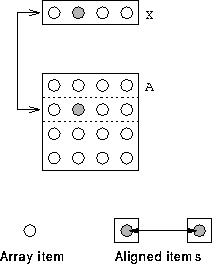

Is is possible to embed an array in a template:
INTEGER :: i= 2
REAL, DIMENSION(4) :: X
REAL, DIMENSION(4,4) :: A
!HPF$ TEMPLATE, DIMENSION(4,4) :: T
!HPF$ ALIGN A(:,:) WITH T(:,:)
!HPF$ ALIGN X(:) WITH T(i,:) ! i used as variable
The above example aligns a 1D vector, X, with a specific row of a template. In this case the i is not used as a symbol but is used a a variable (with a value). Since i = 2 the section is aligned with row 2. See Figure 35.

Figure 35: Visualisation of Embedded Alignment
It is easy to tell that this is what is happening because there is not corresponding i on the LHS of the WITH clause. If i did not possess a value at the point at which it was used then the program would be erroneous.
if a variable name is used simply as a position marker then there will be an occurrence at both sides of the WITH clause; if its value is to be used it will only appear on one side.